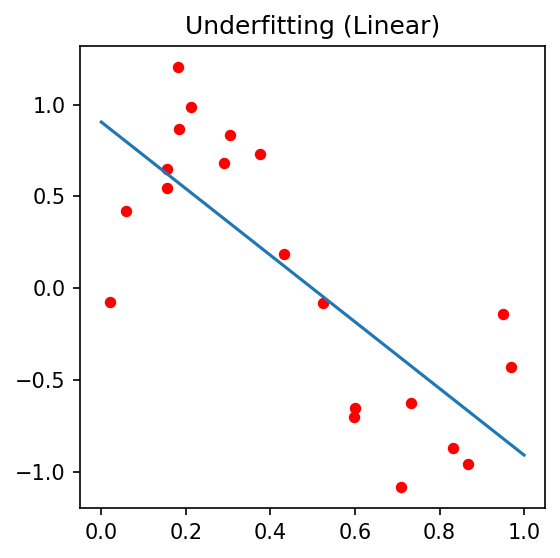
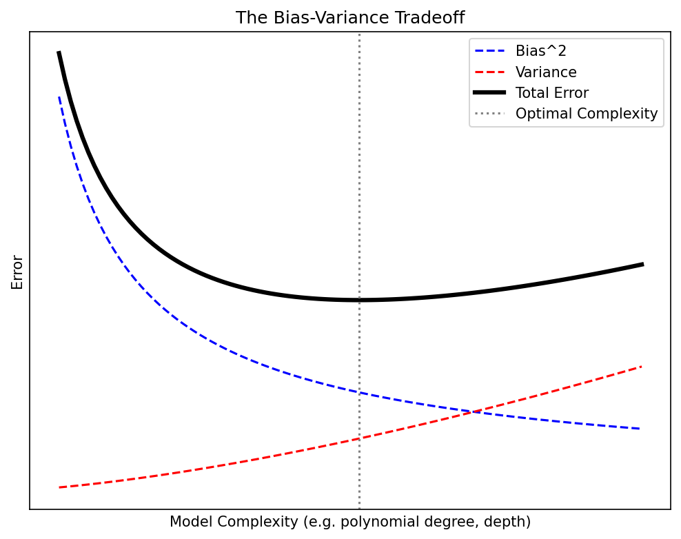
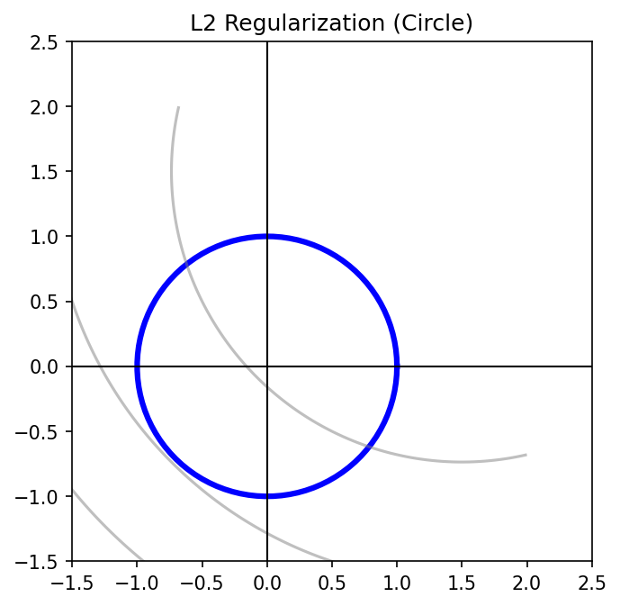
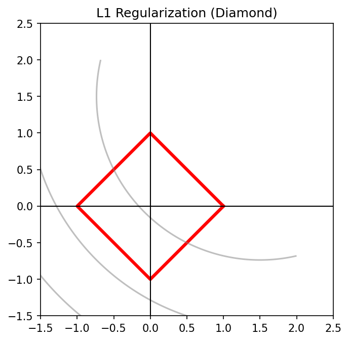
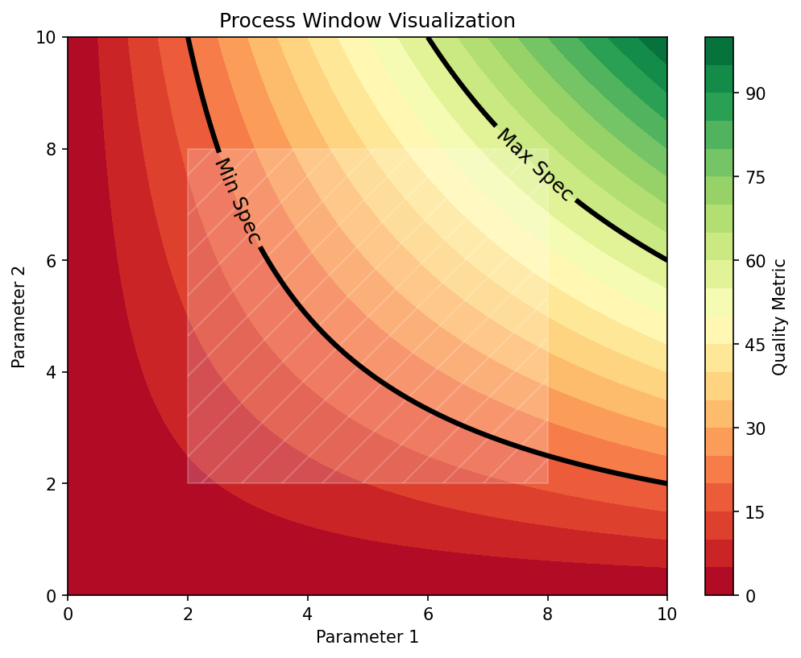
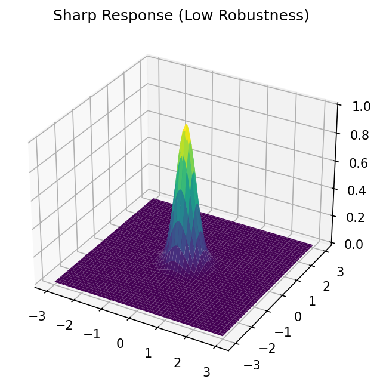
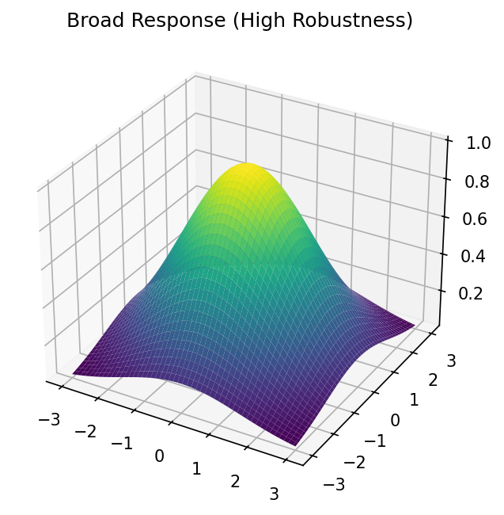
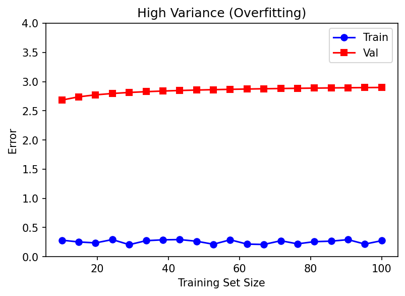

flowchart LR
subgraph "5-Fold Cross-Validation"
direction TB
F1["Fold 1: <b>Val</b> | Train | Train | Train | Train → e₁"]
F2["Fold 2: Train | <b>Val</b> | Train | Train | Train → e₂"]
F3["Fold 3: Train | Train | <b>Val</b> | Train | Train → e₃"]
F4["Fold 4: Train | Train | Train | <b>Val</b> | Train → e₄"]
F5["Fold 5: Train | Train | Train | Train | <b>Val</b> → e₅"]
end
F5 --> R["CV Score = (e₁+e₂+e₃+e₄+e₅) / 5"]
style R fill:#2d6a4f,stroke:#333,color:#fffMachine Learning in Materials Processing & Characterization
Unit 8: Generalization, Robustness, and Process Windows
Prof. Dr. Philipp Pelz
FAU Erlangen-Nürnberg


01. Learning Outcomes
After this unit, you will be able to:
- Explain the bias-variance tradeoff and its implications for model selection
- Apply cross-validation strategies appropriate for materials science data
- Compare regularization techniques (L1, L2, Dropout, Early Stopping)
- Define process windows using ML predictions and sensitivity analysis
- Design a robust model selection workflow for engineering applications
Part 1: Why Models Fail
Generalization, Bias, and Variance
02. The Generalization Challenge
From the Lab Bench to the Production Floor
- Training error: How well the model fits the data it has seen
- Generalization error: How well the model performs on unseen data
- These are not the same thing — and confusing them is the #1 mistake in applied ML
Materials Example:
A model trained on 50 tensile test specimens from a single batch predicts yield strength perfectly — but fails on specimens from a different powder lot, a different machine, or a different humidity level.
The Generalization Gap
The difference between training error and test error is the generalization gap. Our entire goal in model selection is to minimize this gap while keeping both errors low.
03. Underfitting vs Overfitting
Underfitting

- Model is too simple
- High bias
- Misses the underlying pattern
- Example: Fitting a line to a nonlinear stress-strain curve
Good Fit

- Model captures the true relationship
- Balanced bias and variance
- Generalizes well to new data
Overfitting

- Model is too complex
- High variance
- Memorizes noise
- Example: Degree-20 polynomial on 15 data points
04. The Bias-Variance Tradeoff
The Fundamental Decomposition
For a model \(\hat{f}(x)\) trained on data \(\mathcal{D}\), the expected prediction error at a point \(x\) is:
\[\text{EPE}(x) = \underbrace{\text{Bias}^2[\hat{f}(x)]}_{\text{systematic error}} + \underbrace{\text{Var}[\hat{f}(x)]}_{\text{sensitivity to training data}} + \underbrace{\sigma^2_\varepsilon}_{\text{irreducible noise}}\]

- As complexity increases: bias decreases, variance increases
- The optimal model sits at the minimum of total error
- The irreducible noise \(\sigma^2_\varepsilon\) sets a floor — no model can beat it
05. Bias-Variance Decomposition: Mathematical Detail
Deriving the Decomposition
Let \(y = f(x) + \varepsilon\) where \(\mathbb{E}[\varepsilon] = 0\) and \(\text{Var}[\varepsilon] = \sigma^2_\varepsilon\).
\[\mathbb{E}_\mathcal{D}\left[(y - \hat{f}(x))^2\right] = \mathbb{E}_\mathcal{D}\left[(f(x) + \varepsilon - \hat{f}(x))^2\right]\]
Expanding and using \(\bar{f}(x) = \mathbb{E}_\mathcal{D}[\hat{f}(x)]\):
\[= \underbrace{(f(x) - \bar{f}(x))^2}_{\text{Bias}^2} + \underbrace{\mathbb{E}_\mathcal{D}\left[(\hat{f}(x) - \bar{f}(x))^2\right]}_{\text{Variance}} + \underbrace{\sigma^2_\varepsilon}_{\text{Noise}}\]
| Term | Meaning | Reduced by |
|---|---|---|
| \(\text{Bias}^2\) | Model assumptions miss the truth | More flexible model |
| \(\text{Variance}\) | Model changes with different training data | More data, regularization |
| \(\sigma^2_\varepsilon\) | Inherent measurement noise | Better instruments (not ML!) |
06. Polynomial Regression Example
Complexity vs Generalization (McClarren 2021)
Setup: \(n = 20\) noisy samples from \(f(x) = \sin(2\pi x)\)
| Polynomial Degree | Training MSE | Test MSE | Diagnosis |
|---|---|---|---|
| 1 | 0.42 | 0.45 | Underfitting (high bias) |
| 3 | 0.08 | 0.09 | Good fit |
| 9 | 0.001 | 0.35 | Overfitting (high variance) |
| 15 | \(\approx 0\) | 12.7 | Severe overfitting |

- Degree 3 has the best test error — not degree 15!
- Training error always decreases with complexity — but test error does not
07. Think About This…
A Materials Scientist’s Dilemma
You are building a model to predict melt pool depth in laser powder bed fusion from 5 process parameters (laser power, scan speed, hatch spacing, layer thickness, preheat temperature).
You have 40 experimental measurements.
A colleague suggests using a neural network with 3 hidden layers of 128 neurons each.
Question 1: How many parameters does this network have?
→ Approximately \(5 \times 128 + 128 \times 128 + 128 \times 128 + 128 \times 1 \approx 33{,}000\) parameters
Question 2: What will happen when you train it on 40 data points?
→ The model will perfectly memorize all 40 points (training error ≈ 0) but fail catastrophically on new data. You have 33,000 knobs to fit 40 numbers — the model has 825× more capacity than data!
What should you do instead?
→ Start with a simpler model (linear regression, low-degree polynomial, small network with regularization). Use cross-validation to verify generalization.
08. Summary: Part 1
Why Models Fail — Key Takeaways
- Generalization — performance on unseen data — is the only metric that matters for deployment
- Bias (underfitting) and Variance (overfitting) are in tension: reducing one increases the other
- Total Error = Bias² + Variance + Irreducible Noise
- More complex ≠ better — the optimal model balances complexity against available data
- In materials science with small datasets, overfitting is the dominant failure mode
Part 2: Robust Validation Strategies
Cross-Validation and Data Splitting
09. The Problem with Holdout Validation
A Single Split Is Not Enough
Simple holdout: Split data into 80% training / 20% test
- Train on 80%, evaluate on 20%
- Report the test error as “model performance”
Problems for materials data:
- With \(n = 50\) samples, the test set has only 10 samples — high variance in the estimate
- Results depend on which 10 samples end up in the test set
- We “waste” 20% of our precious data — we cannot train on it
Demonstration: Random splits of a 40-sample dataset:
| Split seed | Test MSE |
|---|---|
| 42 | 0.12 |
| 17 | 0.31 |
| 99 | 0.08 |
| 7 | 0.24 |
Which is the “true” performance? None of them are reliable individually.
10. K-Fold Cross-Validation
The Standard Approach (Sandfeld et al. 2024)
Algorithm:
- Randomly partition data into \(k\) equally-sized folds
- For \(i = 1, \ldots, k\):
- Hold out fold \(i\) as the validation set
- Train on the remaining \(k-1\) folds
- Record validation error \(e_i\)
- Report: \(\text{CV}_k = \frac{1}{k}\sum_{i=1}^k e_i \pm \text{SE}\)
Benefits:
- Every sample is used for both training and validation
- The average over \(k\) folds is much more stable than a single holdout
- Standard error gives a confidence interval on performance
Typical choice: \(k = 5\) or \(k = 10\)
11. K-Fold Visualization
Python Implementation:
from sklearn.model_selection import KFold, cross_val_score
from sklearn.linear_model import Ridge
kf = KFold(n_splits=5, shuffle=True, random_state=42)
model = Ridge(alpha=1.0)
scores = cross_val_score(model, X, y, cv=kf, scoring='neg_mean_squared_error')
print(f"CV MSE: {-scores.mean():.4f} ± {scores.std():.4f}")12. Leave-One-Out Cross-Validation
When Every Sample Counts
LOOCV is K-Fold CV where \(k = n\) (number of samples):
- Each “fold” contains exactly one sample
- Train on \(n-1\) samples, test on 1
- Repeat \(n\) times
Advantages:
- Maximum possible training set size (\(n-1\))
- Deterministic — no randomness in the split
- Nearly unbiased estimate of generalization error
Disadvantages:
- Computationally expensive (\(n\) models to train)
- High variance in the estimate (single-sample folds)
- Folds are highly correlated (they share \(n-2\) samples)
When to use LOOCV
LOOCV is most appropriate when \(n < 30\) and training a single model is fast (e.g., linear regression, small random forests). For neural networks on small datasets, use 5- or 10-fold CV instead.
13. Stratified Cross-Validation
Handling Imbalanced Materials Data
Problem: In classification tasks, some classes may be rare.
- Example: 95% “Good” parts, 5% “Defective” parts
- A random fold might contain zero defective samples → unreliable evaluation
Stratified K-Fold CV:
- Each fold preserves the class distribution of the full dataset
- If 5% of samples are defective, each fold also has ~5% defective samples
from sklearn.model_selection import StratifiedKFold
skf = StratifiedKFold(n_splits=5, shuffle=True, random_state=42)
for train_idx, val_idx in skf.split(X, y_class):
# Each fold has the same proportion of each class
X_train, X_val = X[train_idx], X[val_idx]
y_train, y_val = y_class[train_idx], y_class[val_idx]Materials examples requiring stratification:
- Defect detection (rare defect classes)
- Phase classification (minority phases)
- Pass/fail quality classification (high yield processes)
14. Grouped Cross-Validation
Preventing Spatial and Batch Leakage
Problem: In materials data, samples are often correlated within groups:
- Multiple measurements from the same specimen
- Images from different regions of the same wafer
- Tests on parts from the same powder batch
Data leakage: If correlated samples appear in both train and test sets, the model “sees” the answer.
Critical for Materials Science!
Ignoring group structure can give overly optimistic CV scores. Your model appears to generalize — but it is actually just recognizing which specimen a sample came from, not learning the underlying physics.
15. Nested Cross-Validation
Unbiased Model Selection + Performance Estimation
The problem with standard CV for hyperparameter tuning:
If you use CV to select hyperparameters, the CV score is optimistically biased — you have selected the hyperparameters that happen to score best on these particular folds.
flowchart LR
subgraph "Outer Loop (Performance Estimation)"
direction TB
O1["Outer Fold 1: Hold out test"]
O2["Outer Fold 2: Hold out test"]
O3["..."]
O4["Outer Fold K: Hold out test"]
end
subgraph "Inner Loop (Hyperparameter Tuning)"
direction TB
I1["Inner 5-Fold CV on training portion"]
I2["Select best hyperparameters"]
I3["Retrain on full training portion"]
end
O1 --> I1 --> I2 --> I3
I3 --> E["Evaluate on held-out test fold"]
style E fill:#2d6a4f,stroke:#333,color:#fff- Inner loop: tunes hyperparameters via CV on training data
- Outer loop: estimates generalization error on truly unseen data
- Computationally expensive but gives an unbiased performance estimate
16. Think About This…
Choosing the Right Validation Strategy
Scenario: You have collected hardness measurements from 8 different steel specimens. For each specimen, you measured hardness at 20 different locations, giving you 160 total measurements. You want to predict hardness from composition and processing parameters.
A colleague uses standard 10-fold CV and reports \(R^2 = 0.95\).
Is this result trustworthy?
Answer: Almost certainly no. Standard K-Fold will randomly distribute the 20 measurements from each specimen across folds. The model can learn specimen-specific patterns (spatial correlations, local microstructure) rather than the composition→hardness relationship.
What should be done instead?
→ Use GroupKFold with groups = specimen_id, giving 8 groups. This tests whether the model can predict hardness for an entirely new specimen it has never seen — which is the real question.
The \(R^2\) will likely drop significantly — but it will be honest.
17. Summary: Part 2
Robust Validation — Key Takeaways
- Holdout validation is unstable for small datasets — use K-Fold CV
- LOOCV maximizes training data when \(n < 30\) and models train quickly
- Stratified CV preserves class balance for imbalanced classification problems
- Grouped CV prevents data leakage from correlated samples — essential in materials science
- Nested CV gives unbiased performance estimates when tuning hyperparameters
| Scenario | Recommended CV |
|---|---|
| Small balanced dataset (\(n < 30\)) | LOOCV |
| Medium dataset, no groups | 5- or 10-Fold |
| Imbalanced classes | Stratified K-Fold |
| Grouped/correlated data | GroupKFold |
| Hyperparameter tuning + evaluation | Nested CV |
Part 3: Regularization Techniques
Taming Model Complexity
18. Why Regularize?
Constraining the Solution Space
Core idea: Add a penalty for model complexity to the loss function.
\[J_\text{regularized} = \underbrace{\mathcal{L}(\mathbf{w})}_{\text{data fit}} + \underbrace{\lambda \, \Omega(\mathbf{w})}_{\text{complexity penalty}}\]
Without regularization (\(\lambda = 0\)):
- Model is free to use arbitrarily large weights
- Learns noise, overfits
With regularization (\(\lambda > 0\)):
- Large weights are penalized
- Model is forced to find simpler solutions
- Better generalization at the cost of slightly worse training fit
The hyperparameter \(\lambda\) controls the tradeoff:
- \(\lambda\) too small → still overfitting
- \(\lambda\) too large → underfitting (penalty dominates, weights → 0)
- Select \(\lambda\) via cross-validation
19. L2 Regularization (Ridge Regression)
Shrinking Weights Toward Zero
\[J_\text{Ridge} = \sum_{i=1}^n (y_i - \hat{y}_i)^2 + \lambda \sum_{j=1}^p w_j^2 = \|\mathbf{y} - \mathbf{X}\mathbf{w}\|_2^2 + \lambda \|\mathbf{w}\|_2^2\]
Closed-form solution:
\[\hat{\mathbf{w}}_\text{Ridge} = (\mathbf{X}^\top \mathbf{X} + \lambda \mathbf{I})^{-1} \mathbf{X}^\top \mathbf{y}\]
Properties:
- Shrinks all weights proportionally toward zero
- Never sets weights exactly to zero — keeps all features
- Stabilizes ill-conditioned problems (adds \(\lambda\) to diagonal)
- Also called Tikhonov regularization in engineering/physics
Geometric interpretation:

The L2 constraint defines a circle (sphere in higher dimensions). The regularized solution is where the loss contours first touch this circle.
20. L1 Regularization (Lasso)
Automatic Feature Selection Through Sparsity
\[J_\text{Lasso} = \|\mathbf{y} - \mathbf{X}\mathbf{w}\|_2^2 + \lambda \|\mathbf{w}\|_1 = \|\mathbf{y} - \mathbf{X}\mathbf{w}\|_2^2 + \lambda \sum_{j=1}^p |w_j|\]
Properties:
- Drives many weights to exactly zero
- Performs automatic feature selection
- Solution is sparse: only a subset of features are “active”
- No closed-form solution — requires iterative optimization
Geometric interpretation:

The L1 constraint defines a diamond (cross-polytope). The corners of the diamond lie on coordinate axes — so the loss contours often touch at a corner, setting one or more weights to exactly zero.
Materials application: With 100 candidate process parameters, Lasso can identify the 5-10 that truly matter — interpretable and physically meaningful.
21. L1 vs L2: A Visual Comparison
L2 (Ridge) — Circle
- Smooth constraint boundary
- Solution usually not on an axis
- All features retained with small weights
- Good for: correlated features, prediction
L1 (Lasso) — Diamond
- Pointy corners on axes
- Solution often at a corner → sparse
- Some features exactly zeroed out
- Good for: feature selection, interpretability
| Property | L2 (Ridge) | L1 (Lasso) |
|---|---|---|
| Weight behavior | Small but nonzero | Many exactly zero |
| Feature selection | No | Yes |
| Correlated features | Shares weight among correlated features | Picks one, zeros others |
| Computation | Closed-form | Iterative |
| Use case | Prediction with all features | Sparse, interpretable model |
22. Elastic Net: The Best of Both Worlds
\[J_\text{ElasticNet} = \|\mathbf{y} - \mathbf{X}\mathbf{w}\|_2^2 + \lambda_1 \|\mathbf{w}\|_1 + \lambda_2 \|\mathbf{w}\|_2^2\]
Or equivalently with mixing parameter \(\alpha \in [0, 1]\):
\[J = \|\mathbf{y} - \mathbf{X}\mathbf{w}\|_2^2 + \lambda \left[\alpha \|\mathbf{w}\|_1 + (1 - \alpha) \|\mathbf{w}\|_2^2\right]\]
- \(\alpha = 1\): Pure Lasso
- \(\alpha = 0\): Pure Ridge
- \(0 < \alpha < 1\): Elastic Net
Why Elastic Net?
- Handles correlated features better than Lasso (groups of correlated features are selected together)
- Still produces sparse solutions (unlike pure Ridge)
- Particularly useful in materials science where process parameters are often correlated (e.g., power and energy density)
23. Dropout for Neural Networks
Randomly Disabling Neurons During Training (Goodfellow, Bengio, and Courville 2016)
Idea: During each training step, randomly set each neuron’s output to zero with probability \(p\) (typically \(p = 0.2\) to \(0.5\)).

Why it works:
- Prevents co-adaptation — neurons cannot rely on specific other neurons
- Each training step trains a different “sub-network”
- Effectively an ensemble of \(2^n\) sub-networks (where \(n\) = number of neurons)
- At test time: use all neurons but scale outputs by \((1-p)\)
24. Batch Normalization
Stabilizing Training Through Normalization
Batch Normalization normalizes the inputs to each layer using mini-batch statistics:
\[\hat{x}_i = \frac{x_i - \mu_\text{batch}}{\sqrt{\sigma^2_\text{batch} + \epsilon}} \qquad y_i = \gamma \hat{x}_i + \beta\]
where \(\gamma\) (scale) and \(\beta\) (shift) are learned parameters.
Benefits:
- Stabilizes training — reduces sensitivity to weight initialization
- Allows higher learning rates → faster convergence
- Acts as a mild regularizer (batch statistics add noise)
- Reduces the need for dropout in some architectures
Caution for small batch sizes:
In materials science, batch sizes may be very small (e.g., 4-8 samples). Batch normalization becomes unreliable because the batch statistics are noisy. Consider Layer Normalization or Group Normalization instead.
25. Early Stopping
The Simplest and Most Effective Regularizer

Principle:
- Training loss always decreases as training continues
- Validation loss decreases then increases (overfitting begins)
- Stop training at the minimum of validation loss
Implementation:
from sklearn.neural_network import MLPRegressor
# Or in PyTorch with a patience-based callback:
best_val_loss = float('inf')
patience, wait = 10, 0
for epoch in range(1000):
train_loss = train_one_epoch(model, train_loader)
val_loss = evaluate(model, val_loader)
if val_loss < best_val_loss:
best_val_loss = val_loss
save_checkpoint(model) # Save the best model
wait = 0
else:
wait += 1
if wait >= patience:
break # Stop training- Patience parameter: how many epochs to wait for improvement before stopping
- Acts as an implicit constraint on model complexity — limits effective number of parameters
26. Data Augmentation as Regularization
Manufacturing More Training Data
Idea: Apply domain-appropriate transformations to existing data to create new training samples.
For micrograph images:
- Rotation (90°, 180°, 270° for isotropic materials)
- Flipping (horizontal, vertical)
- Random cropping
- Brightness/contrast variation (simulating imaging conditions)
- Adding Gaussian noise (simulating detector noise)
For tabular process data:
- Adding small Gaussian noise: \(\tilde{x}_j = x_j + \mathcal{N}(0, \sigma_j^2)\)
- Mixup: \(\tilde{x} = \alpha x_a + (1-\alpha) x_b\), \(\tilde{y} = \alpha y_a + (1-\alpha) y_b\)
- SMOTE for imbalanced classification (generates synthetic minority samples)
Domain Knowledge Matters
Only apply augmentations that preserve the physical meaning of the data. Rotating a micrograph of a columnar grain structure by 45° changes the physics — don’t do it! Always validate augmentations against domain knowledge.
27. Ensemble Methods: Bagging and Random Forests
Reducing Variance Through Averaging
Bagging (Bootstrap Aggregating):
- Draw \(B\) bootstrap samples from the training data (sample with replacement)
- Train a separate model on each bootstrap sample
- Average the predictions: \(\hat{f}_\text{bag}(x) = \frac{1}{B}\sum_{b=1}^B \hat{f}_b(x)\)
Why it works (variance reduction):
If each model has variance \(\sigma^2\) and correlation \(\rho\):
\[\text{Var}\left[\hat{f}_\text{bag}\right] = \rho \sigma^2 + \frac{1-\rho}{B}\sigma^2\]
As \(B \to \infty\), variance approaches \(\rho \sigma^2\) — reduced by factor \((1-\rho)\)!
Random Forests = Bagged decision trees with additional randomization:
- At each split, only a random subset of features is considered
- This decorrelates the trees (reduces \(\rho\)), further reducing variance
- Extremely effective for tabular materials data with minimal tuning
28. Summary: Part 3
Regularization Techniques — Overview
flowchart TD
R["Regularization"] --> E["Explicit Penalties"]
R --> I["Implicit Methods"]
R --> A["Architectural"]
E --> L2["L2 / Ridge<br>Shrinks all weights"]
E --> L1["L1 / Lasso<br>Zeros out features"]
E --> EN["Elastic Net<br>L1 + L2 combined"]
I --> ES["Early Stopping<br>Limit training time"]
I --> DA["Data Augmentation<br>More virtual data"]
I --> ENS["Ensembles / Bagging<br>Average models"]
A --> DO["Dropout<br>Random neuron masking"]
A --> BN["Batch Normalization<br>Normalize activations"]
style R fill:#1a1a2e,stroke:#333,color:#fff
style E fill:#2d6a4f,stroke:#333,color:#fff
style I fill:#1b4965,stroke:#333,color:#fff
style A fill:#6a2d4f,stroke:#333,color:#fffRule of thumb for materials science:
- Tabular data, small \(n\): Start with Ridge/Elastic Net or Random Forests
- Images/CNNs: Dropout + Data Augmentation + Early Stopping
- Always: Use cross-validation to select \(\lambda\) and other regularization hyperparameters
Part 4: Process Robustness and Sensitivity
From Model Quality to Process Quality
29. What Is Process Robustness?
Taguchi’s Quality Philosophy Meets ML
Robust process: A process whose output quality is insensitive to uncontrollable variation (noise).
Sources of noise in manufacturing:
- Raw material variation (powder particle size, composition fluctuations)
- Environmental factors (temperature, humidity)
- Equipment drift (laser power decay, nozzle wear)
- Operator-to-operator variation
Key insight: A process operating at the peak of a narrow performance hill is fragile. A process operating on a plateau of acceptable performance is robust — even if the peak value is slightly lower.
\[\text{Robustness} \propto \frac{1}{\left\|\nabla_{\mathbf{x}} f(\mathbf{x})\right\|} \bigg|_{\mathbf{x} = \mathbf{x}_\text{operating}}\]
Low gradient magnitude = robust operating point.
30. Sensitivity Analysis: Local Methods
How Much Does Each Input Matter?
Local sensitivity (partial derivatives):
\[S_i = \frac{\partial \hat{f}}{\partial x_i}\bigg|_{\mathbf{x}_0}\]
Measures the rate of change of the prediction with respect to input \(x_i\) at operating point \(\mathbf{x}_0\).
Normalized sensitivity (elasticity):
\[S_i^\text{norm} = \frac{\partial \hat{f}}{\partial x_i} \cdot \frac{x_i}{\hat{f}(\mathbf{x}_0)}\]
“A 1% change in \(x_i\) causes an \(S_i^\text{norm}\)% change in the output.”
One-at-a-time (OAT) sensitivity:
- Vary one parameter while holding all others fixed
- Plot output vs each parameter → sensitivity curves
- Simple but misses interactions between parameters
For neural networks: Use automatic differentiation (backpropagation) to compute \(\nabla_{\mathbf{x}} \hat{f}\) efficiently.
31. Global Sensitivity: Sobol Indices
Decomposing Variance Across the Entire Parameter Space
Limitation of local methods: They only tell you about sensitivity at one operating point. The sensitivity may change dramatically across the parameter space.
Sobol indices decompose the total output variance into contributions from each input (and their interactions):
\[\text{Var}[Y] = \sum_i V_i + \sum_{i<j} V_{ij} + \cdots + V_{1,2,\ldots,p}\]
First-order Sobol index for input \(x_i\):
\[S_i = \frac{V_i}{\text{Var}[Y]} = \frac{\text{Var}_{x_i}\left[\mathbb{E}_{\mathbf{x}_{\sim i}}[Y \mid x_i]\right]}{\text{Var}[Y]}\]
Fraction of total variance explained by \(x_i\) alone (ignoring interactions).
Total-effect index: \(S_{T_i} = 1 - \frac{\text{Var}_{\mathbf{x}_{\sim i}}\left[\mathbb{E}_{x_i}[Y \mid \mathbf{x}_{\sim i}]\right]}{\text{Var}[Y]}\)
Includes all interactions involving \(x_i\).
32. SHAP Values for Feature Importance
Fair Attribution of Predictions (Neuer et al. 2024)
SHAP (SHapley Additive exPlanations) assigns each feature a contribution to each individual prediction:
\[\hat{f}(x) = \phi_0 + \sum_{j=1}^p \phi_j(x)\]
where \(\phi_0 = \mathbb{E}[\hat{f}]\) and \(\phi_j(x)\) is the SHAP value for feature \(j\) at input \(x\).
Based on game theory: The Shapley value is the unique attribution that satisfies:
- Efficiency: contributions sum to the prediction
- Symmetry: equal features get equal credit
- Null: irrelevant features get zero credit
Visualization:
- Beeswarm plot: One dot per sample, colored by feature value, positioned by SHAP value
- Dependence plot: SHAP value of one feature vs its value, colored by an interacting feature
33. Process Windows: Definition
The Safe Operating Region
A process window is the region in parameter space where:
- The target property meets its specification (e.g., density > 99.5%)
- The process is robust to expected noise levels
- The model prediction is confident (low uncertainty)
Formally:
\[\mathcal{W} = \left\{\mathbf{x} \in \mathbb{R}^p : \hat{f}(\mathbf{x}) \in [y_\text{min}, y_\text{max}] \;\wedge\; \|\nabla \hat{f}(\mathbf{x})\| < \tau \right\}\]
where \([y_\text{min}, y_\text{max}]\) is the specification range and \(\tau\) is the sensitivity threshold.

In additive manufacturing: The process window is the region in (Power, Speed) space that avoids both lack-of-fusion (insufficient melting) and keyhole (excessive vaporization) porosity.
34. Mapping Process Windows with ML
From Experimental Data to Operating Maps
Traditional approach: Costly design-of-experiments (DOE), one point at a time.
ML-accelerated approach:
- Collect a moderate number of experimental points spanning the parameter space
- Train a surrogate model (e.g., Gaussian Process, Random Forest)
- Predict the response surface over a fine grid
- Identify the process window from predictions + uncertainty
flowchart LR
D["DOE Experiments<br>(30-50 points)"] --> T["Train ML<br>Surrogate Model"]
T --> P["Predict on<br>Dense Grid"]
P --> W["Identify Process<br>Window"]
P --> S["Sensitivity<br>Analysis"]
W --> R["Robust Operating<br>Point Selection"]
S --> R
R --> V["Experimental<br>Validation"]
V -->|"Iterate"| D
style R fill:#2d6a4f,stroke:#333,color:#fffAdvantage: An ML surrogate can be evaluated in milliseconds, enabling:
- Exhaustive sensitivity analysis
- Monte Carlo uncertainty propagation
- Real-time process optimization
35. Robust Optimization vs Peak Optimization
Choosing Where to Operate
Peak Optimization

- Finds the maximum of the predicted property
- Operating point: \(\mathbf{x}^* = \arg\max_\mathbf{x} \hat{f}(\mathbf{x})\)
- Risk: Small deviations cause large quality drops
- Good for: laboratory research
Robust Optimization

- Finds a plateau where the property is good AND stable
- \(\mathbf{x}^* = \arg\max_\mathbf{x}\left[\hat{f}(\mathbf{x}) - \kappa \|\nabla \hat{f}(\mathbf{x})\|\right]\)
- Benefit: Tolerates process noise
- Good for: production/manufacturing
The Engineering Tradeoff
In production, a 5% lower peak performance with 10× better robustness is almost always the right choice. A process that produces 98% density every time is more valuable than one that produces 99.5% density half the time and 95% density the other half.
36. Case Study: LPBF Keyhole Porosity Avoidance
Laser Powder Bed Fusion Process Window
Problem: In LPBF additive manufacturing, porosity arises from two mechanisms:
- Lack-of-fusion (too little energy): unmolten powder, large irregular pores
- Keyhole (too much energy): vapor depression traps gas, spherical pores
ML approach:
- Inputs: Laser power \(P\) [W], Scan speed \(v\) [mm/s], Layer thickness \(t\) [µm], Hatch spacing \(h\) [µm]
- Output: Relative density [%] or porosity classification
- Model: Random Forest trained on ~200 single-track experiments
Results:

- The ML model identifies a band of safe parameters between two failure modes
- Sensitivity analysis reveals that \(P/v\) (linear energy density) is the dominant parameter
- The robust operating point is at the center of the safe band, not at the edge
37. Summary: Part 4
Process Robustness — Key Takeaways
- Process robustness = insensitivity to uncontrollable noise
- Local sensitivity (partial derivatives) reveals which parameters matter most at a given operating point
- Global sensitivity (Sobol indices) accounts for interactions and variation across the full parameter space
- SHAP values provide fair, per-prediction feature attributions
- Process windows define the safe operating region where specifications are met robustly
- Robust optimization prioritizes stability over peak performance — essential for production
Part 5: Practical Guidelines
From Theory to Practice
38. The Model Selection Workflow
A Systematic Approach
flowchart TD
S["Start: Define Problem<br>& Success Criteria"] --> D["Explore Data<br>EDA + Domain Knowledge"]
D --> B["Establish Baseline<br>(Linear model / mean)"]
B --> M["Try 2-3 Model Families<br>(Ridge, RF, small NN)"]
M --> CV["Evaluate via CV<br>(Grouped if needed)"]
CV --> C{"Acceptable<br>performance?"}
C -->|No| DG["Diagnose: Bias or Variance?"]
DG -->|High Bias| HB["More features / complex model"]
DG -->|High Variance| HV["Regularize / more data"]
HB --> M
HV --> M
C -->|Yes| T["Tune Hyperparameters<br>(Nested CV)"]
T --> F["Final Evaluation<br>on Held-out Test Set"]
F --> DEP["Deploy + Monitor"]
style S fill:#1a1a2e,stroke:#333,color:#fff
style DEP fill:#2d6a4f,stroke:#333,color:#fffCritical: Always start with a simple baseline — you need to know what “good” looks like before you can judge if a complex model is worth the effort.
39. Hyperparameter Tuning Strategies
Grid Search, Random Search, and Bayesian Optimization
Grid Search
- Evaluate all combinations on a fixed grid
- \(k^p\) evaluations for \(p\) parameters with \(k\) values each
- Exhaustive but scales poorly
- Only feasible for 1-2 hyperparameters
Random Search
- Sample hyperparameters from distributions
- More efficient than grid for \(p > 2\) (McClarren 2021)
- Covers more of the space per evaluation
- Often finds good solutions faster
Bayesian Optimization
- Builds a surrogate model of CV score vs hyperparameters
- Selects next point to maximize expected improvement
- Most sample-efficient for expensive models
- Tools: Optuna, scikit-optimize
40. Learning Curves: Diagnosis Tool
Identifying Bias vs Variance from Data
Learning curve: Plot training error and validation error as a function of training set size.
High Bias (Underfitting)

- Training error increases as data grows
- Validation error decreases but plateaus high
- Both converge to a large gap from target
- Fix: More complex model, better features
High Variance (Overfitting)

- Training error remains low
- Validation error remains high
- Large gap between training and validation
- Fix: More data, regularization, simpler model
41. When to Collect More Data vs Improve the Model
A Decision Framework
| Observation | Diagnosis | Action |
|---|---|---|
| High train error, high val error | High bias | More complex model or better features |
| Low train error, high val error | High variance | More data or regularization |
| Low train error, low val error, large gap to target | Irreducible noise | Better measurements or new features |
| Good CV but poor production performance | Distribution shift | Collect production-representative data |
Collecting more data helps when:
- You have high variance (overfitting)
- Your current data does not cover the deployment distribution
- You need to characterize rare events (defects, failures)
Improving the model helps when:
- You have high bias (underfitting)
- Domain knowledge suggests important features are missing
- The relationship is highly nonlinear and you are using a linear model
Practical Rule of Thumb
If doubling your training data improves CV score by less than 5%, you have reached the point of diminishing returns for data collection. Focus on feature engineering or model architecture instead.
42. Think About This…
Regularization in Practice
You are training a neural network to predict fatigue life from 12 processing and microstructure features. Your dataset has \(n = 80\) samples.
The network has 2 hidden layers with 64 neurons each (~5,000 parameters).
You apply no regularization. After training:
- Training \(R^2 = 0.99\)
- 5-Fold CV \(R^2 = 0.35\)
Question: What regularization strategies would you combine to improve this?
Recommended combination:
- Reduce network size → 2 layers of 16 neurons (~300 parameters)
- Add Dropout (\(p = 0.3\)) after each hidden layer
- Early Stopping with patience = 15 epochs
- L2 weight decay (\(\lambda = 10^{-3}\)) in the optimizer
- Use data augmentation (small Gaussian noise on inputs)
- Tune all regularization hyperparameters via cross-validation
43. Domain-Informed Regularization
Using Physics to Constrain ML Models
Beyond generic regularization: Use domain knowledge to impose physically meaningful constraints.
Examples in materials science:
| Constraint | Implementation |
|---|---|
| Output must be positive (density, strength) | Use ReLU or softplus output activation |
| Monotonic relationship (more energy → more melting) | Constrained optimization or monotonic networks |
| Symmetry (isotropic material → rotation invariance) | Equivariant architectures or augmentation |
| Conservation laws (mass, energy) | Physics-informed loss terms |
| Known scaling laws (\(\sigma \propto d^{-1/2}\) Hall-Petch) | Feature engineering: include \(d^{-1/2}\) as input |
Physics-Informed ML
Domain-informed regularization is a form of inductive bias — it encodes prior knowledge about the problem into the model structure. This is especially powerful for small datasets where data alone cannot distinguish between physically plausible and implausible solutions. We will explore this further in Units 12-13.
44. Industrial Deployment Considerations
From Notebook to Production
Model validation is not the end — it is the beginning.
Deployment checklist:
- Distribution monitoring: Track input distributions; alert when production data differs from training data
- Performance monitoring: Continuously compare predictions to ground truth when available
- Model versioning: Track which model version produced which predictions
- Fallback strategy: What happens when the model fails? (default to conservative parameters)
- Retraining policy: When and how to update the model with new data
Common failure modes in production:
- Covariate shift: New powder supplier → different particle size distribution
- Concept drift: Machine aging → relationship between parameters and output changes
- Out-of-distribution inputs: Operator enters parameter values outside training range
Best practice: Define an applicability domain — the region of input space where the model has been validated. Flag predictions outside this domain.
45. Model Selection: A Complete Example
Predicting Tensile Strength from AM Process Parameters
Data: \(n = 120\) specimens from 8 build plates, 5 input features
Step 1 — Baseline:
- Mean prediction: MAE = 45 MPa
- Linear regression (GroupKFold, groups=build_plate): MAE = 28 MPa, \(R^2 = 0.62\)
Step 2 — Model comparison (GroupKFold CV):
| Model | CV MAE [MPa] | CV \(R^2\) |
|---|---|---|
| Ridge (\(\lambda = 1.0\)) | 26.3 | 0.67 |
| Elastic Net (\(\alpha = 0.5\)) | 25.8 | 0.69 |
| Random Forest (100 trees) | 22.1 | 0.76 |
| Small NN (2×32, dropout=0.3) | 23.5 | 0.73 |
Step 3 — Tune Random Forest (Nested CV):
- Best:
n_estimators=300, max_depth=8, min_samples_leaf=5 - Nested CV MAE = 21.4 MPa, \(R^2 = 0.78\)
Step 4 — Sensitivity analysis: Laser power and scan speed account for 72% of variance (Sobol).
46. Common Pitfalls and How to Avoid Them
Lessons Learned
| Pitfall | Consequence | Prevention |
|---|---|---|
| Using test data for model selection | Optimistic performance estimate | Nested CV or separate holdout |
| Ignoring group structure | Data leakage, inflated \(R^2\) | GroupKFold |
| No baseline model | Cannot judge if complex model is worthwhile | Always start with linear/mean |
| Over-engineering with deep learning | Overfitting, uninterpretable | Start simple, increase complexity if needed |
| Reporting training accuracy | Meaningless metric | Report CV or test accuracy only |
| Not checking learning curves | Wrong diagnosis | Always plot learning curves |
The golden rule of applied ML:
“If your result seems too good to be true, it probably is. Check for data leakage.”
47. Exercise Preview
What You Will Practice
Exercise 8a: Cross-Validation Strategies
- Implement standard, stratified, and grouped K-Fold CV on an AM dataset
- Compare the CV scores to demonstrate the effect of ignoring group structure
- Plot learning curves to diagnose bias vs variance
Exercise 8b: Regularization Comparison
- Fit Ridge, Lasso, and Elastic Net to a materials dataset with 50 features
- Visualize the regularization path (coefficients vs \(\lambda\))
- Identify which features are selected by Lasso
Exercise 8c: Process Window Mapping
- Train a Random Forest on LPBF process data
- Map the predicted density in Power-Speed space
- Perform sensitivity analysis using SHAP values
- Identify the robust operating point
48. Summary & Key Takeaways
1. Generalization is Everything
Models must perform on unseen data. The bias-variance tradeoff governs this.
2. Validate Rigorously
Use cross-validation with appropriate grouping and stratification. Never evaluate on training data.
3. Regularize Intelligently
Combine explicit penalties (L1/L2), implicit methods (early stopping, augmentation), and architectural approaches (dropout) — tuned via CV.
4. Think About Robustness
Optimize for stability, not just peak performance. Use sensitivity analysis to understand which parameters matter.
5. Start Simple, Increase Complexity Only When Justified
Linear models → Random Forests → Neural Networks. Always compare to a baseline.
49. Looking Ahead
Connections to Future Units
| Concept from Unit 8 | Extended in | Topic |
|---|---|---|
| Bias-Variance Tradeoff | Unit 9 | Ensemble Methods & Boosting |
| Cross-Validation | Unit 10 | Bayesian Model Selection |
| Regularization | Units 12-13 | Physics-Informed Neural Networks |
| Process Windows | Unit 11 | Uncertainty Quantification |
| SHAP & Sensitivity | Unit 14 | Explainable AI (XAI) |
Next Unit (9): We will see how ensemble methods (Boosting, Gradient-Boosted Trees) systematically reduce bias while controlling variance — building on the bias-variance framework from today.
50. References
Textbooks
- McClarren (2021): Ch. 2 (Linear Models, Bias-Variance), Ch. 3 (Model Selection)
- Neuer et al. (2024): Ch. 4 (Supervised Learning Evaluation)
- Sandfeld et al. (2024): Ch. 12 (Generalization), Ch. 16 (Cross-Validation)
- Bishop (2006): Ch. 3 (Linear Models for Regression, Regularization)
- Goodfellow, Bengio, and Courville (2016): Ch. 7 (Regularization for Deep Learning)
Further Reading
- Murphy (2012): Ch. 7 (Linear Regression), Ch. 13 (Sparse Linear Models)
- Bergstra & Bengio (2012): “Random Search for Hyper-Parameter Optimization”
- Lundberg & Lee (2017): “A Unified Approach to Interpreting Model Predictions” (SHAP)
- Sobol (1993): “Sensitivity Estimates for Nonlinear Mathematical Models”
Bishop, Christopher M. 2006. Pattern Recognition and Machine Learning. Springer.
Goodfellow, Ian, Yoshua Bengio, and Aaron Courville. 2016. Deep Learning. MIT Press.
McClarren, Ryan G. 2021. Machine Learning for Engineers: Using Data to Solve Problems for Physical Systems. Springer.
Murphy, Kevin P. 2012. Machine Learning: A Probabilistic Perspective. MIT Press.
Neuer, Michael et al. 2024. Machine Learning for Engineers: Introduction to Physics-Informed, Explainable Learning Methods for AI in Engineering Applications. Springer Nature.
Sandfeld, Stefan et al. 2024. Materials Data Science. Springer.

© Philipp Pelz - Machine Learning in Materials Processing & Characterization